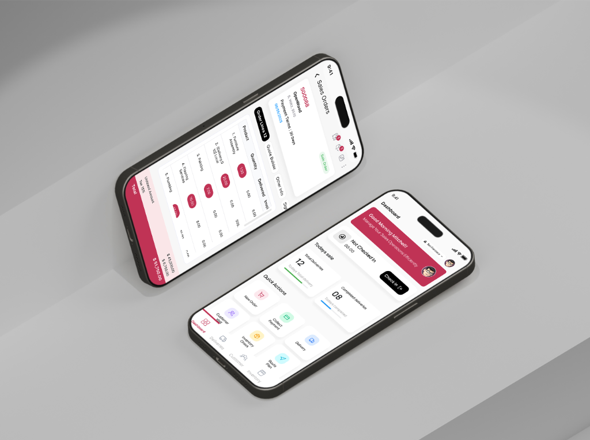
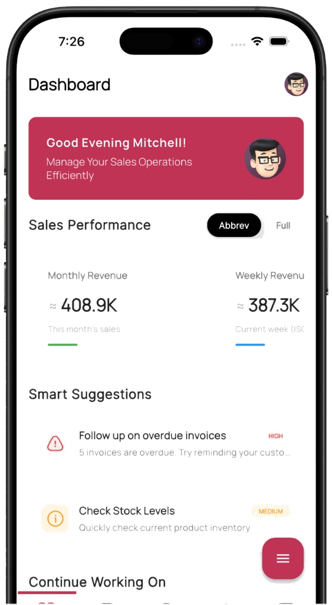
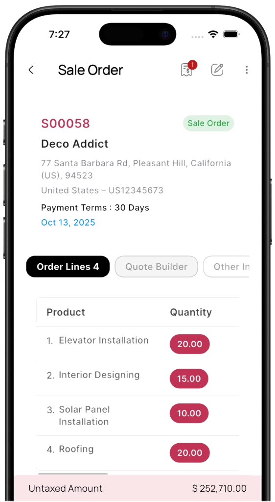

Overview
Mobo is a mobile app ecosystem developed for Odoo users, bringing essential business operations into a simpler and more intuitive mobile experience.
Background
Odoo provides extensive business functionality, but translating its complex workflows into mobile experiences can be challenging.
Mobo was created to make these operations more accessible through dedicated mobile applications. My responsibility was to understand the existing workflows and transform them into clear, user-friendly mobile interfaces.


Design Approach
I studied Odoo workflows with developers, identified usability challenges, and explored ways to simplify complex information for mobile users.
From wireframes to final UI, I focused on clear hierarchy, intuitive navigation, and a consistent design system.
Design System
As Mobo expanded across different applications, establishing a consistent visual foundation became important.
I worked on creating reusable design patterns and UI elements that supported consistency while allowing each application to serve its specific workflow.
Challenges
Complex Information
Odoo workflows contain large amounts of information. The challenge was keeping essential details accessible without overwhelming the mobile interface.
Mobile Adaptation
Translating desktop-based workflows into smaller screens required careful decisions around layout, navigation, and interactions.
Information Hierarchy
Different details and actions compete for attention. I needed to establish a clear order so users could understand and access important information easily.
Consistent Experience
Mobo includes multiple applications with different purposes. Creating a consistent visual language across them was essential.
Outcome
The design direction focused on making complex Odoo workflows easier to navigate, creating consistency across applications, and bringing business operations into a more approachable mobile experience.
What I Learned
Mobo taught me that simplifying a product doesn’t always mean removing information.